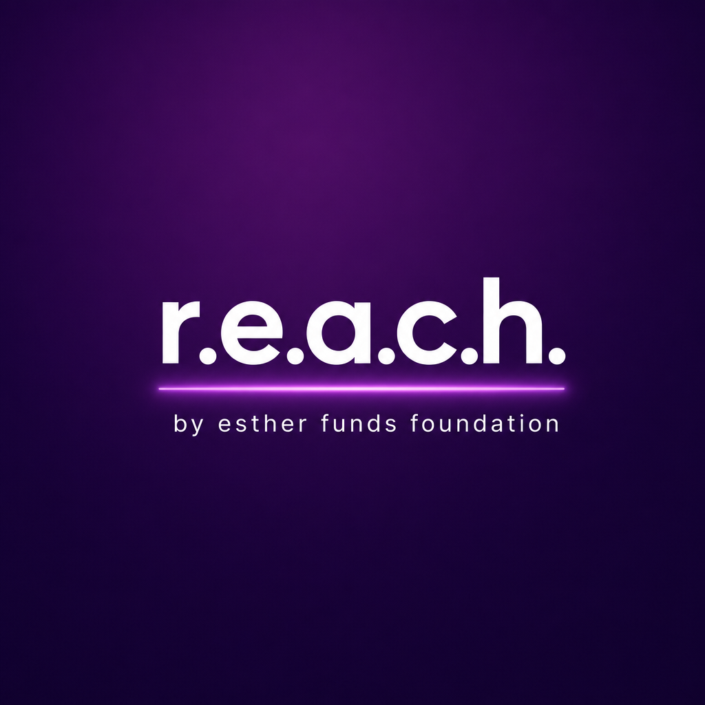

WORKSHOP 01FLAGSHIP
REACH Workshop I
Lead EFF’s flagship facilitated workshop with the full presentation and a facilitator kit built for your campus.

r.e.a.c.h.by esther funds foundation Action Hub ↗THE STUDENT SUPPORT UNIVERSE
Money. Meals. Mental health. A plan. A person who knows what to do next. REACH helps students find support before one hard week becomes a reason to leave.
REACH COMMAND CENTER ● ONLINE
THE REACH UNIVERSE
Choose the path that matches what you need, who you want to help, or the change you want to make.
Scholarships, emergency aid, food, housing, hygiene, academic tools, and support before things fall apart.
Start with you → 02Listen, encourage, connect, and follow up with scripts that help a friend take the next step.
Help a friend → 03Host workshops, scholarship search parties, resource drives, and campus events that matter.
Bring REACH to campus → 04Lead pantry restocks, hygiene kits, care packages, youth mentoring, and career events.
Find a project → 05Start a chapter, become an ambassador, advocate for aid, and build real partnerships.
Create bigger change → 06Mentor younger students, host readiness workshops, tutor, and make college feel possible.
Support K–12 → 07Mentor, sponsor, offer internships, host career events, or advise a local chapter.
Give back →REACH MODE
Choose what is most urgent. We’ll give you a practical 72-hour starting route — no shame, no guessing.
This is a self-guided planning tool, not emergency or clinical care. If you are in immediate danger, call 911. For crisis support, call or text 988.
Pick a need to unlock your next three moves.
READY-TO-RUN PROGRAMMING
Lead EFF’s flagship facilitated workshop with the full presentation and a facilitator kit built for your campus.
Go deeper with EFF’s second signature workshop — designed to create connection, resource awareness, and student action.
LEAD THE MOVEMENT
Ambassadors get the structure to turn care into action: campus tools, event plans, training, service tracking, and a national sisterhood of student leaders.
Built by Esther Funds Foundation for students, campuses, communities, and the people who believe support should arrive before a student gives up.